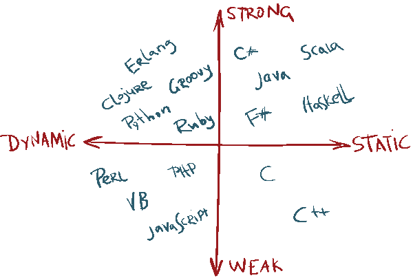

Podem classificar els llenguatges segons utilitzen les dades. El concepte Tipat en programació es refereix a com es manegen i s'assignen els tipus de dades en un llenguatge de programació. Atés el moment en el qual se li assigna un tipus de dada a una variable podem classificar els llenguatges de la manera següent:
A) Llenguatges amb Tipat estàtic
Es refereix a l'assignació de tipus de dades durant la compilació del programa. En aquesta mena de llenguatges, el tipus de dada d'una variable es defineix en temps de disseny i no pot canviar durant l'execució del programa. Això ajuda a detectar errors en una etapa primerenca i a millorar la robustesa del codi. Exemples: Java, C.
int edat = 25;
float iva = 0.21
B) Llenguatges amb Tipat dinàmic
Permet que el tipus de dada d'una variable es determine en temps d'execució. Els llenguatges de programació amb tipat dinàmic són flexibles i permeten canviar el tipus de dada d'una variable durant l'execució del programa. Tanmateix, això pot portar a errors difícils de depurar si no es manegen amb cura. Exemple: Python.
let numero = BigInt(1234567890);
numero = "Rosalía"
A més del tipat estàtic i dinàmic, una altra classificació comuna és el tipat fort i el tipat feble, que es refereix al fet que tan estricte o permissiu és un llenguatge al moment de canviar un tipus de dada. Així, segons l'estricte que siga un llenguatge a l'hora de permetre canviar de tipus de dada a una variable podem classificar els llenguatges de la manera següent:
A) Llenguatges amb Tipat Fort
Imposa restriccions estrictes sobre les operacions que es poden realitzar en els tipus de dades. Això significa que les conversions de tipus han de ser explícites i no es permeten operacions entre tipus incompatibles. Això pot evitar errors subtils i millorar la seguretat del codi.
float iva = 0.25;
int edat = int(*iva);
B) Llenguatges amb Tipat Feble
Permet realitzar conversions implícites entre tipus de dades. Això pot ser convenient en alguns casos, però també pot portar a resultats inesperats si no es maneja adequadament.
base = 236
iva = 0.21
total = base * ( 1 + iva)
Canviar un tipus de dada per un altre és un procés que en programació es coneix com a càsting i pot fer-se tant en llenguatges de tipat estàtic com en llenguatges de tipat dinàmic.
Ufff! No havia dit abans que no es podia?
És veritat, no es pot canviar el tipus de dada tan sols assignant un valor diferent d'una variable, però existeixen casos excepcionals en què es necessita fer una conversió de tipus, per exemple en fer operacions amb un nombre enter i un altre decimal (de punt flotant). I en eixos casos els llenguatges tenen un mecanisme explícit que cal respectar per a fer el canvi.
Llenguatges tipats i exemples
Vegem diferents llenguatges de programació adopten diferents enfocaments. Alguns exemples de llenguatges tipats inclouen:
- C++: llenguatge de programació amb tipat estàtic i fort. Els tipus de dades han de declarar-se explícitament i les conversions de tipus són estrictes.
- JavaScript: llenguatge de programació amb tipat dinàmic i feble. Permet canviar el tipus de dada d'una variable durant l'execució i realitza conversions de tipus de manera automàtica en algunes circumstàncies.
- Python: tipat dinàmic però fort. Encara que les variables poden canviar de tipus, les conversions han de ser explícites.
Inferència de tipus
És una característica que alguns llenguatges de programació ofereixen per a deduir automàticament el tipus d'una variable en funció del seu valor. Això permet escriure codi més concís i llegible sense necessitat de declarar explícitament el tipus de cada variable.
edat = 45;
iva = 0.21
nom = "Ana Peleteiro"